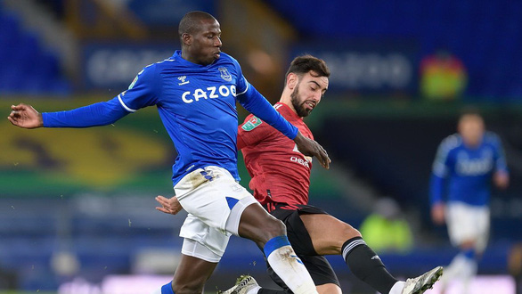

- M.U cần thoát khỏi Solskjaer?
- Ronaldo giải 'bài toán số 9' cho M.U
- Hãy để dành lời khen khi Ronaldo làm được chuyện lớn cho M.U!

Leicester (trái) là thách thức đầu tiên trong chuỗi 10 trận khó khăn của M.U Ảnh: Reuters
- Tiếp sau Leicester sẽ là Liverpool ở vòng 9 rồi Tottenham, Man City, Watford, Chelsea và Arsenal. Xen kẽ đó sẽ là 3 trận Champions League vào loại "sinh tử chiến" với Atalanta (2 trận) và Villarreal.
- 10 trận đấu trong khoảng 1 tháng rưỡi, trong đó có 2 tuần lễ các cầu thủ trở về đội tuyển quốc gia. Tức M.U sẽ phải đá 10 trận đó trong khoảng thời gian hơn 1 tháng, với 9 trận đại chiến.
- Đó là một lịch thi đấu chẳng khác nào như cơn ác mộng. Một đội bóng với đầy đủ lực lượng mạnh nhất, phong độ cao nhất có thể cũng lâm vào tình cảnh "què quặt" sau khi trải qua lịch thi đấu ám ảnh đó chứ đừng nói là một M.U đang bị đặt dưới sự nghi ngờ.
- Trước vòng đấu này, HLV Ole Gunnar Solskjaer đã bị các nhà cái châu Âu liệt vào nhóm HLV dễ bị sa thải nhất nước Anh. Theo đó, Solskjaer chỉ dưới HLV của các CLB đang vất vả trụ hạng như Steve Bruce (Newcastle) hay Daniel Farke (Norwich).
- Solskjaer sẽ trụ được đến chặng nào trong hành trình 10 trận đấu khó khăn sắp tới? Có lẽ ban lãnh đạo "Quỷ đỏ" không nặng nề đến mức gây sức ép lên ông ngay trong trận đấu đầu tiên.
- M.U nằm trong nhóm những CLB thiệt thòi nhất sau lượt trận quốc tế khi mất Varane (chấn thương) cùng Fred và Cavani (trở về từ Nam Mỹ, không kịp ra sân trận này).
- Các CĐV M.U đang bắt đầu nếm trải cảm giác của Liverpool ở mùa giải năm ngoái, khi lần lượt mất đi những trung vệ tốt nhất của mình. Không Varane, không cả Maguire, HLV Solskjaer gần như chắc chắn phải sử dụng Bailly đá cặp với Lindelof ở trung tâm hàng thủ trong khoảng một tuần tới.
- CĐV M.U có lý do để lo lắng về cặp trung vệ dự bị này. Kể từ khi đến Old Trafford, Varane hoàn toàn trội hơn các hậu vệ khác của M.U về nhiều chỉ số quan trọng như khả năng không chiến. Varane có 2,4 pha không chiến thành công mỗi trận, cao nhất đội.
- Tỉ lệ bị qua người của anh chỉ là 0,4 lần/trận, thấp hơn cả Maguire (0,7 lần/trận), và có tỉ lệ tắc bóng thành công chỉ xếp sau Wan-Bissaka.
- Lindelof là phương án không đến nỗi nào, nhưng Bailly là một canh bạc thực sự. Trung vệ người Bờ Biển Ngà này mới ra sân một lần mùa giải này ở Cúp liên đoàn.
- Leicester là thử thách mang tính mở màn cho chuỗi 10 trận kinh hoàng sắp tới của M.U. Leicester có phong độ khá tệ mùa này khi đang phải trải qua chuỗi 4 trận không thắng ở Premier League và chỉ giành được 1 chiến thắng trong 7 trận gần nhất.
- Hàng công nghèo nàn là vấn đề lớn nhất với HLV Brendan Rodgers hiện tại. Họ hầu như chỉ có Jamie Vardy biết ghi bàn (ghi 6/9 bàn thắng của Leicester sau 7 vòng đấu). Với hàng tấn công như vậy, nhiệm vụ xuyên thủng mành lưới của M.U cũng không hề dễ dàng với Leicester dù họ có lợi thế sân nhà.
- Hàng phòng ngự của Leicester cũng gặp tổn thất đáng kể với việc vắng Ndidi, còn Jonny Evans đang phải chạy đua hồi phục chấn thương.
3 điểm cho các đại gia?
- Trong khi M.U gặp nhiều khó khăn, Liverpool chỉ phải gặp chủ nhà Watford (18h30), Man City tiếp Burnley (21h), còn Chelsea làm khách trước Brentford.
- Liverpool cũng là đội tổn thất lực lượng nhiều sau lượt trận quốc tế. Họ vắng Jota vì chấn thương, trong khi Fabinho và Alisson không kịp ra sân vì vòng loại World Cup khu vực Nam Mỹ diễn ra muộn.
- Thêm vào đó, khả năng bình phục của Thiago và Alexander-Arnold cũng còn bỏ ngỏ. Việc phải sử dụng nhiều cầu thủ dự bị ở trận này (và còn phải dưỡng sức cho đại chiến với Atletico vào giữa tuần) có thể khiến Liverpool chịu nhiều rủi ro.
- Chelsea ít nỗi lo về lực lượng hơn, nhưng Brentford lại là "ngựa ô" của mùa này khi đang chễm chệ ở vị trí thứ 7 trên bảng xếp hạng. Đội bóng mới lên hạng này đã đánh bại Arsenal và cầm hòa Liverpool ở giai đoạn đầu mùa.